base plot
Point and line plots
Basics
The most intuitive plot function in R is plot which generates both points and line plots. For example, to plot Petal.Length, Petal.Width, or Petal.Length vs Petal.Width we can do:
- Index observations
plot(iris$Petal.Length) # index observation for Petal.Length

plot(iris$Petal.Width) # index observation for Petal.Width

- Scatter plots
plot(Petal.Length ~ Petal.Width, data = iris) # pairwise

Customization
The latest takes two arguments: Petal.Length ~ Petal.Width which is to be read as plotting the variable Petal.Length as a function of Petal.Width. Argument data indicates the plot function from which data frame to extract the variables Another way to call this command is to type:
plot(iris$Petal.Length ~ iris$Petal.Width) # using the $ operator
The plot function can take on many other arguments to help customize the default plot options. For example, we may want to change the axis labels to something more descriptive than the simple variable name:
# add labels to x- and y-axes, title
plot(Petal.Length ~ Petal.Width, data = iris,
xlab = 'Petal width (cm)',
ylab = 'Petal length (cm)',
main = 'Petal width & length of iris flower')

We can change the symbole type using argument pch (plotting character’, see ?pch for options). pch = 19 will produce a solid circle. The argument cex will control his size (character expansion). We can also set its colors to be 90% transparent (10% opaque) using expression col = rgb (0,0,0,0.10). The rgb function defines the intensity for each of the display primary colors (on a scale of 0 to 1). The primary colors are red, green and blue. The forth value is optional and provides the fraction opaqueness (or transparency) with a value of 1 being completely opaque.
plot(Petal.Length ~ Petal.Width, data = iris,
xlab = 'Petal width (cm)',
ylab = 'Petal length (cm)',
main = 'Petal width and length of iris flower',
pch = 19, cex=2,
col = rgb (1,0,0,0.10))

Now it is time to combine this with what we previously learned on conditional selection. How to add different colors for the three different species. Remember the ifelse?
# create a vector of character with color names
col.iris<-ifelse(iris$Species=='setosa','purple',ifelse(iris$Species=='versicolor','blue','pink'))
col.iris
[1] "purple" "purple" "purple" "purple" "purple" "purple" "purple"
[8] "purple" "purple" "purple" "purple" "purple" "purple" "purple"
[15] "purple" "purple" "purple" "purple" "purple" "purple" "purple"
[22] "purple" "purple" "purple" "purple" "purple" "purple" "purple"
[29] "purple" "purple" "purple" "purple" "purple" "purple" "purple"
[36] "purple" "purple" "purple" "purple" "purple" "purple" "purple"
[43] "purple" "purple" "purple" "purple" "purple" "purple" "purple"
[50] "purple" "blue" "blue" "blue" "blue" "blue" "blue"
[57] "blue" "blue" "blue" "blue" "blue" "blue" "blue"
[64] "blue" "blue" "blue" "blue" "blue" "blue" "blue"
[71] "blue" "blue" "blue" "blue" "blue" "blue" "blue"
[78] "blue" "blue" "blue" "blue" "blue" "blue" "blue"
[85] "blue" "blue" "blue" "blue" "blue" "blue" "blue"
[92] "blue" "blue" "blue" "blue" "blue" "blue" "blue"
[99] "blue" "blue" "pink" "pink" "pink" "pink" "pink"
[106] "pink" "pink" "pink" "pink" "pink" "pink" "pink"
[113] "pink" "pink" "pink" "pink" "pink" "pink" "pink"
[120] "pink" "pink" "pink" "pink" "pink" "pink" "pink"
[127] "pink" "pink" "pink" "pink" "pink" "pink" "pink"
[134] "pink" "pink" "pink" "pink" "pink" "pink" "pink"
[141] "pink" "pink" "pink" "pink" "pink" "pink" "pink"
[148] "pink" "pink" "pink" We can insert this color vector in the argument col and controlling its opacity with the alpha function from the package scales. You can guess the argument col can accept a vector of character with just the name of color instead of a rgb code.
library(scales)
plot(Petal.Length ~ Petal.Width, data = iris,
xlab = 'Petal width (cm)',
ylab = 'Petal length (cm)',
main = 'Petal width and length of iris flower',
pch = 19, cex=2,
col = alpha(col.iris, 0.2))

We now must add a legend to our plot. Observe the conversion of the color list into a factor, and the extraction of levels in the col argument.
plot(Petal.Length ~ Petal.Width, dat = iris,
xlab = 'Petal width (cm)',
ylab = 'Petal length (cm)',
main = 'Petal width and length of iris flower',
pch = 19, cex=2,
col = alpha(col.iris, 0.2))
legend(x="bottomright", pch= 19, cex=1.5, legend= c("versicolor","setosa", "virginica"), col=levels(as.factor(alpha(col.iris, 0.2))))

The argument las=1 will rotate y-axis labels. This is often a requirement for publication quality plots.
plot(Petal.Length ~ Petal.Width, dat = iris,
xlab = 'Petal width (cm)',
ylab = 'Petal length (cm)',
main = 'Petal width and length of iris flower',
pch = 19, cex=2, las=1,
col = alpha(col.iris, 0.2))
legend(x="bottomright", pch= 19, cex=1.5, legend= c("versicolor","setosa", "virginica"), col=levels(as.factor(alpha(col.iris, 0.2))))

The size of the main title, axis, labels is also control with cex arguments
plot(Petal.Length ~ Petal.Width, dat = iris,
xlab = 'Petal width (cm)',
ylab = 'Petal length (cm)',
main = 'Petal width and length of iris flower',
cex.axis=1.0, cex.lab=1.5, cex.main=1.5,
pch = 19, cex=2, las=1,
col = alpha(col.iris, 0.2))
legend(x="bottomright", pch= 19, cex=1.5, legend= c("versicolor","setosa", "virginica"), col=levels(as.factor(alpha(col.iris, 0.2))))

The size of the points can be set as a proportion of a given continuous variable
ratio<-iris$Petal.Length/iris$Sepal.Width # ratio between the length of petal and the width of Sepal
plot(Petal.Length ~ Petal.Width, dat = iris,
xlab = 'Petal width (cm)',
ylab = 'Petal length (cm)',
main = 'Petal width and length of iris flower',
cex.axis=1.0, cex.lab=1.5, cex.main=1.5,
pch = 19, las=1, cex= ratio * 2,
col = alpha(col.iris, 0.2))
legend(x="bottomright", pch= 19, cex=1.5, legend= c("versicolor","setosa", "virginica"), col=levels(as.factor(alpha(col.iris, 0.2))))

It looks like the variableSepal.Width is poorly informative in discriminating the three species.
The function pairs allows a quick examination of the relationship among variables of interest: a scatterplot matrix.
Types
Panel plot

Line plot
A conversion to a line plot is easily made by specifying the type of plot.
# generate a data frame with chronological variable
blossom<-NULL
blossom$year <- 2010:2019 #
blossom$count.alaska <- c(3, 1, 5, 2, 3, 8, 4, 7, 6, 9)
blossom$count.canada <- c(4, 6, 5, 7, 10, 8, 10, 11, 15, 17)
as.data.frame(blossom)
year count.alaska count.canada
1 2010 3 4
2 2011 1 6
3 2012 5 5
4 2013 2 7
5 2014 3 10
6 2015 8 8
7 2016 4 10
8 2017 7 11
9 2018 6 15
10 2019 9 17plot(count.alaska ~ year,dat = blossom, type='l',
ylab = "No. of flower blossoming")
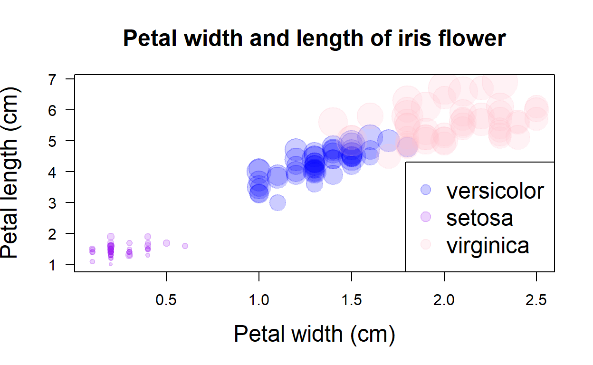
To plot both points and line, set the type parameter to “b” (for both). We’ll also set the point symbol to 20.
plot(count.alaska ~ year,dat = blossom, type='b', pch=20,
ylab = "No. of flower blossoming")

We can rotate the axis, increase the width of the line, change its type and color:
plot(count.alaska ~ year,dat = blossom, type='b', pch=20,
lty=2, lwd=0.5, col='red',
ylab = "No. of flower blossoming")

We can add the other variable by adding a line of another type and color:
plot(count.alaska ~ year,dat = blossom, type='b', pch=20,
lty=2, lwd=0.5, col='red',
ylab = "No. of flower blossoming")
lines(count.canada ~ year,dat = blossom, type='b', pch=20,
lty=3, lwd=0.5, col='blue')

The plot is a static object meaning that we need to define the axes limits before calling the original plot function. Both axes limits can be set using the xlim and ylim parameters. We don’t need to set the x-axis range since both variables cover the same year range. We will therefore only focus on the y-axis limits. We can grab both the minimum and maximum values for the variables count.alaska and count.canada using the range function, then pass the range to the ylim parameter in the call to plot.
y.rng<-range(c(blossom$count.alaska, blossom$count.canada))
plot(count.alaska ~ year,dat = blossom, type='l', ylim = y.rng,
lty=2, lwd=1, col='red',
ylab = "No. of flower blossoming")
lines(count.canada ~ year,dat = blossom,
lty=1, lwd=1, col='blue')
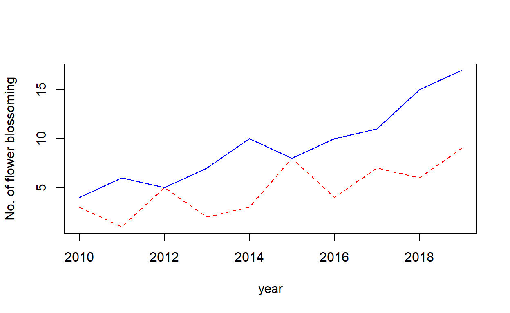
Note: point plots from different variables can also be combined into a single plot using the points function instead of the lines function. Let’s get back to our iris dataset and build our plot sequentially for two species.
iris.ver<- subset(iris, Species == "versicolor")
iris.vir<- subset(iris, Species == "virginica")
y.rng <- range( c(iris.ver$Petal.Length, iris.vir$Petal.Length) , na.rm = TRUE)
x.rng <- range( c(iris.ver$Petal.Width, iris.vir$Petal.width) , na.rm = TRUE)
# Plot an empty plot
plot(Petal.Length ~ Petal.Width, dat = iris.ver,
xlab = 'Petal width (cm)',
ylab = 'Petal length (cm)',
main = 'Petal width and length of iris flower',
cex.axis=1.0, cex.lab=1.5, cex.main=1.5, type='n',
xlim=x.rng, ylim=y.rng)
# Add points for versicolor
points(Petal.Length ~ Petal.Width, dat = iris.ver, pch = 20,cex=2,
col = rgb(0,0,1,0.10))
# Add points for versicolor
points(Petal.Length ~ Petal.Width, dat = iris.vir, pch = 20,cex=2,
col = alpha('#fc03c6', 0.2))
# Add legend
legend("topleft", c("versicolor", "virginica"), pch = 19, cex=1.2,
col = c(rgb(0,0,1,0.10), alpha('#fc03c6', 0.2)))
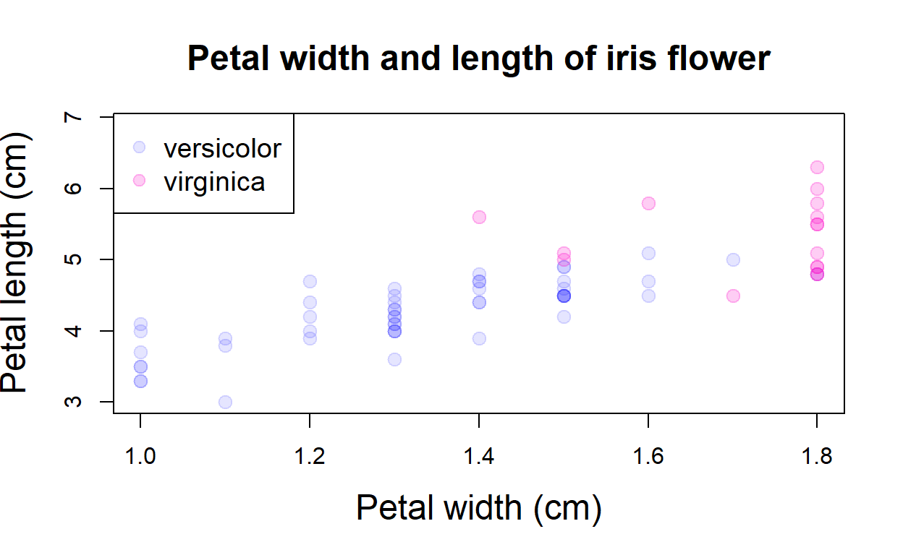
Note 1: that na.rm=T is added in the range function to prevent NA value in the data from returning an NA value in the range.
Note 2: You can define the color using the rgb function, or by color name such as col = "red" or col = "bisque". For a full list of color names, type colors() at a command prompt. You can also the hexadecimal code of the color. Google “color picker”. Color gradient can easily be created and personalized here and in many other websites.
Box plot
A boxplot is one of many graphical tools used to summarize the distribution of a data batch: behind the simple visualization, it inform on the data themselves. The graphic consists of a “box” that depicts the range covered by 50% of the data (aka the interquartile range, IQR), a horizontal line that displays the median, and “whiskers” that depict 1.5 times the IQR or the largest (for the top half) or smallest (for the bottom half) values.
For example, we can summarize the width of the sepal for all individuals in our iris dataset:
boxplot(iris$Sepal.Width, na.rm = TRUE)

Several variables can be summarized on the same plot.
boxplot(iris$Sepal.Width,iris$Sepal.Length, iris$Petal.Width,iris$Petal.Length, names = c("Sepal.Width", "Sepal.Length", "Petal.Length","Petal.Width"), main = "Iris flower traits")

The names argument labels the x-axis and the main argument labels the plot title. The outliers can be removed from the plot, if desired, by setting the outline parameter to FALSE. The boxplot graph can also be plotted horizontally by setting the horizontal parameter to TRUE:
boxplot(iris$Sepal.Width,iris$Sepal.Length, iris$Petal.Width,iris$Petal.Length, names = c("Sepal.Width", "Sepal.Length", "Petal.Length","Petal.Width"), main = "Iris flower traits",outline = FALSE, horizontal = TRUE )
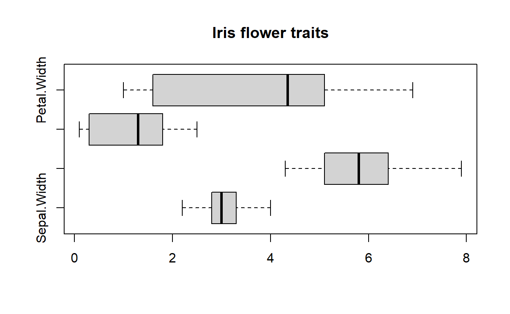
Using a long version of a table (pivot_longer), the variable can be summarized by the levels of a factor, here the Species levels
boxplot(Sepal.Width ~ Species,iris)

We can reorder the boxplots based on the median value. By default, boxplot will order the boxplots following the factor’s level order.

Histogram plot
The histogram is another form of data distribution visualization. It consists of partitioning a batch of values into intervals of equal length then tallying their count in each interval. The height of each bar represents these counts. For example, we can plot the histogram of the width od sepal using the hist function as follows:
hist(iris$Sepal.Width, xlab = "Width of Sepal", main = NA)

To control the number of bins add the breaks argument. The breaks argument can be passed different types of values. The simplest value is the desired number of bins. Note, however, that you might not necessarily get the number of bins defined with the breaks argument.
hist(iris$Sepal.Width, xlab = "Width of Sepal", main = NA, breaks=10)

The documentation states that the breaks value “is a suggestion only as the breakpoints will be set to pretty values”. pretty refers to a function that rounds values to powers of 1, 2 or 5 times a power of 10.
If you want total control of the bin numbers, manually create the breaks as follows:
n <- 10 # Define the number of bin
minx <- min(iris$Sepal.Width, na.rm = TRUE)
maxx <- max(iris$Sepal.Width, na.rm = TRUE)
bins <- seq(minx, maxx, length.out = n +1)
hist(iris$Sepal.Width, xlab = "Width of Sepal", main = NA, breaks = bins)

Density plot
Histograms have their pitfalls. For example, the number of bins can drastically affect the appearance of a distribution. One alternative is the density plot which, for a series of x-values, computes the density of observations at each x-value. This generates a “smoothed” distribution of values.
Unlike the other plotting functions, density does not generate a plot but a list object instead. But the output of density can be wrapped with a plot function to generate the plot.
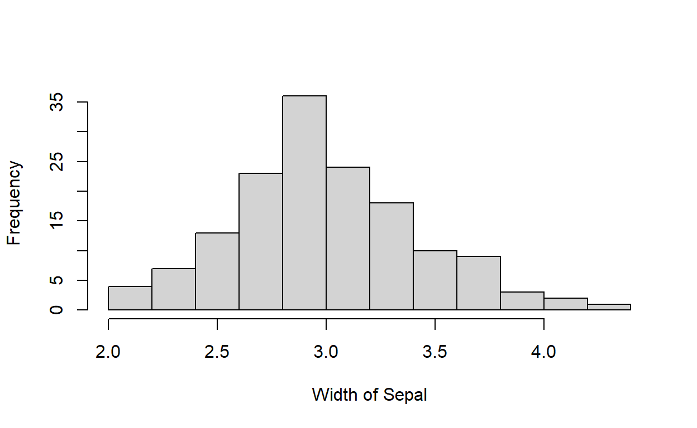
You can control the bandwidth using the bw argument. For example:
dens <- density(iris$Sepal.Width, bw=0.05)
plot(dens, main = "Density distribution of the width of sepal")

The bandwidth parameter adopts the variable’s units.
QQ plot
This is an important plot called by the function qqnorm to examine the normality of a variable. A qqline can be added to represent a “theoretical”, by default normal, quantile-quantile plot.
Practice 1: Using rairuoho dataset, examine the relationship between the length of the plant at day3 and the length at day7: create a scatterplot. Examine if the length at day7 is pretty normal (i.e. following a normal distribution, not just your feeling): you will use hist, a density plot and qqnorm. How does thetreatment affect the length at day7: make a boxplot.Make a comparison of the length of the plant between each day using function pairs.
Show Solution
rairuoho<-read.table('Data/rairuoho.txt',header=T, sep="\t", dec=".")
plot(day3 ~ day7,dat=rairuoho,
xlab = 'Length at day 3',
ylab = 'Length at day 7',
main = 'Realtionship between the length at day 3 and day 7')
hist(rairuoho$day7)
dens.rai <- density(rairuoho$day7, bw=6)
plot(dens.rai, main = "Density distribution of the length at day 7")
qqnorm(rairuoho$day7)
qqline(rairuoho$day7)
boxplot(day7~treatment, data=rairuoho)
pairs(rairuoho[,1:6])
Settings
See the current graphical settings using:
par() # graphical options
$xlog
[1] FALSE
$ylog
[1] FALSE
$adj
[1] 0.5
$ann
[1] TRUE
$ask
[1] FALSE
$bg
[1] "white"
$bty
[1] "o"
$cex
[1] 1
$cex.axis
[1] 1
$cex.lab
[1] 1
$cex.main
[1] 1.2
$cex.sub
[1] 1
$cin
[1] 0.15 0.20
$col
[1] "black"
$col.axis
[1] "black"
$col.lab
[1] "black"
$col.main
[1] "black"
$col.sub
[1] "black"
$cra
[1] 28.8 38.4
$crt
[1] 0
$csi
[1] 0.2
$cxy
[1] 0.02851711 0.09259261
$din
[1] 6.499999 3.999999
$err
[1] 0
$family
[1] ""
$fg
[1] "black"
$fig
[1] 0 1 0 1
$fin
[1] 6.499999 3.999999
$font
[1] 1
$font.axis
[1] 1
$font.lab
[1] 1
$font.main
[1] 2
$font.sub
[1] 1
$lab
[1] 5 5 7
$las
[1] 0
$lend
[1] "round"
$lheight
[1] 1
$ljoin
[1] "round"
$lmitre
[1] 10
$lty
[1] "solid"
$lwd
[1] 1
$mai
[1] 1.02 0.82 0.82 0.42
$mar
[1] 5.1 4.1 4.1 2.1
$mex
[1] 1
$mfcol
[1] 1 1
$mfg
[1] 1 1 1 1
$mfrow
[1] 1 1
$mgp
[1] 3 1 0
$mkh
[1] 0.001
$new
[1] FALSE
$oma
[1] 0 0 0 0
$omd
[1] 0 1 0 1
$omi
[1] 0 0 0 0
$page
[1] TRUE
$pch
[1] 1
$pin
[1] 5.259999 2.159999
$plt
[1] 0.1261539 0.9353846 0.2550000 0.7950000
$ps
[1] 12
$pty
[1] "m"
$smo
[1] 1
$srt
[1] 0
$tck
[1] NA
$tcl
[1] -0.5
$usr
[1] 0 1 0 1
$xaxp
[1] 0 1 5
$xaxs
[1] "r"
$xaxt
[1] "s"
$xpd
[1] FALSE
$yaxp
[1] 0 1 5
$yaxs
[1] "r"
$yaxt
[1] "s"
$ylbias
[1] 0.2The par function allows you to set up graphical parameters (for all coming plots)
The latest will apply to all the following plots and until the graphical parameters are reinitialize using dev.off()
dev.off()
Some useful settings control by the function par:
- Text and symbol size
cex point and text size
cex.axis axis tick label size
cex.lab axis label size
cex.main title size
cex.sub subtitle size
- Plotting symbol (e.g., for scatter plots)
pch plotting symbol (pch=19 or pch="*")
- Lines (e.g., for line plots)
lty line type (1=solid,2.6=dashed or dotted)
lwd line width
- Margins (have to be setup before plotting)
mar margins (in order: bottom, left, top, right)
- Panels (have to be setup before plotting)
mfrow no. of rows and column, e.g. par(mfrow=c(2,2))
- Axis range
xlim min, max
ylim min, max
DEMO
par(bg="#FCE8C5", mar=c(4,4,4,4), pch = 19, las=1, cex=1.2, cex.main=1.2, cex.axis=1,cex.lab=1)
plot(Petal.Length ~ Petal.Width, dat = iris,
xlab = 'Petal width (cm)',
ylab = 'Petal length (cm)',
main = 'Petal width and length of iris flower',
col = alpha(col.iris, 0.2)) # set up symbol types and their color
legend(x="bottomright", pch= 19, cex=0.8, legend= c("versicolor","setosa", "virginica"), col=levels(as.factor(alpha(col.iris, 0.2))))

Extra elements to add in a plot can be entered seperately:
- Title and labels
title
title (main='title', ylab='y-axis title", xlab'x-axis title')- Text annotation
textor in the margin usingmtext
- Horizontal or vertical line
abline
- Already mentioned:
line,points,legend, etc.
Exporting
You might need to export your plots as standalone image files for publications. R can export to many different raster image file formats such as jpg, png, gif and tiff, and several vector file formats such as PostScript, svg and PDF. You can specify the image resolution (in dpi), the image height and width, and the size of the margins.
The following example saves the last plot as an uncompressed tiff file with a 5“x6” dimension and a resolution of 300 dpi. This is accomplished by simply book-ending the plotting routines between the tiff and dev.offfunctions:
tiff(filename = "Figures/iris_plot.tif", width = 5, height = 6, units = "in", compression = "none", res = 300)
par(bg="#FCE8C5", mar=c(4,4,4,4), pch = 19, las=1, cex=1.2, cex.main=1.2, cex.axis=1,cex.lab=1)
plot(Petal.Length ~ Petal.Width, dat = iris,
xlab = 'Petal width (cm)',
ylab = 'Petal length (cm)',
main = 'Petal width and length of iris flower',
col = alpha(col.iris, 0.2)) # set up symbol types and their color
legend(x="bottomright", pch= 19, cex=0.8, legend= c("versicolor","setosa", "virginica"), col=levels(as.factor(alpha(col.iris, 0.2))))
dev.off()
png
2 To save the same plot to a pdf file format, simply substitute tiff with pdf and adjust the relevant parameters:
pdf(file= "Figures/iris_plot.pdf", width = 5, height = 6)
par(bg="#FCE8C5", mar=c(4,4,4,4), pch = 19, las=1, cex=1.2, cex.main=1.2, cex.axis=1,cex.lab=1)
plot(Petal.Length ~ Petal.Width, dat = iris,
xlab = 'Petal width (cm)',
ylab = 'Petal length (cm)',
main = 'Petal width and length of iris flower',
col = alpha(col.iris, 0.2)) # set up symbol types and their color
legend(x="bottomright", pch= 19, cex=0.8, legend= c("versicolor","setosa", "virginica"), col=levels(as.factor(alpha(col.iris, 0.2))))
dev.off()
png
2
Practice 2: Export your previous rairuoho scatterplot. Make it more informative by adding as many elements you think it needs and by customizing graphical options. Make the y-axis starting at exactly 0 and ending at 130. Save your plot as a pdf, ready for publication!
Show Me The Solution
#As title, call me and show me your pdf
Package lattice
The lattice package is an implementation of the Trellis display (or multi-panel display) used to visualize multivariate data or, more specifically, to visualize the dependencies and interactions between multiple variables.
Univariate data set
Let’s look at a simple example where the density distribution of Petal.Length is conditioned by Species.
library(lattice)
densityplot(~ Petal.Length | Species, iris, plot.points = "", layout=c(1,3))

The layout=c(1,3) parameter instructs the lattice function to layout the panels along 1 column and 3 row. If you wanted the plots to be displayed in 1 rows and 3 column you would simply type layout=c(3,1) which is the default option.
The first thing to note is that the x-scale axis range is the same for all five plots. At first, this may seem as an inefficient use of the range of x values–for example, the setosa density plot is squeezed in the left-hand side of the plot, but it is important to understand the purpose of a trellis plot: to facilitate comparison of plots. By ensuring that all scale ranges remain the same, we can easily compare the plot shape. In the above plot, it is clear that the petal.length differs among Species.
The lattice packages also has a histogram function

Note the importance of having a table shaped in long format. The density plots are conditioned on species which requires that species be treated as different values of a same variable (i.e. column Species in iris). The above plot could not be generated if the various species were treated as separate variables (i.e. columns).
You can also compare the distributions to a normal distribution using qqmath (i.e. a Q-Q plot):

Boxplots are another popular way to view the distribution of values. In the following example, we create boxplots of Petal Length as a function of a dummy variable variety (Petal.Length ~ variety) created fro the purpose of this demo. We condition this comparison using species information (|Species)
iris$variety<-rep(c(rep('pure',25), rep('hybrid',25)),3) # dummy variable
bwplot(Petal.Length ~ variety|Species, iris)
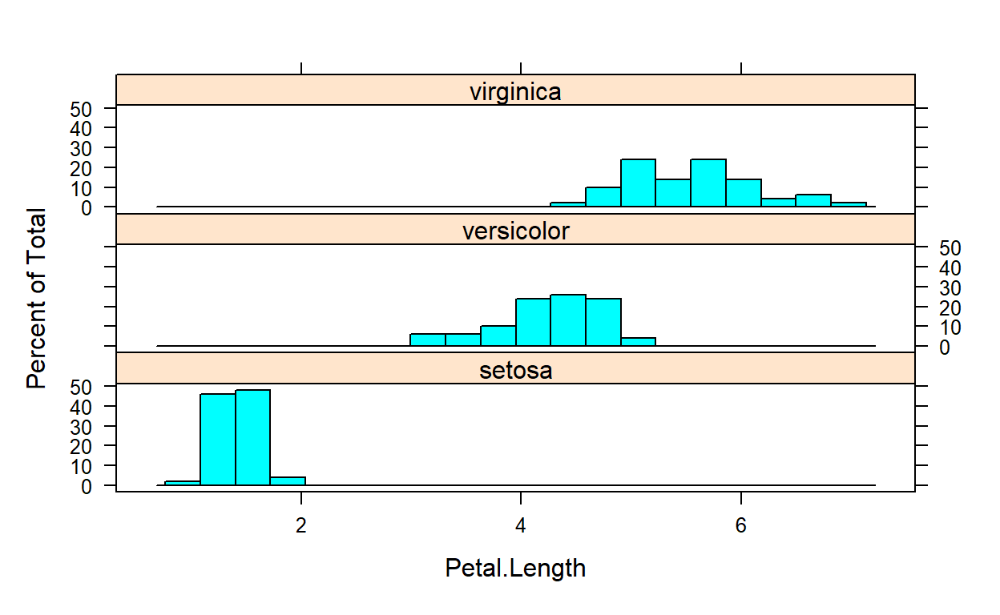
Multivariate data set
Scatter plots
The lattice package allows logically to plot several variables on a same plot. For example, we can plot Sepal.Length + Sepal.Width vs Petal.Length + Petal.Width for each Species on a same plot:
xyplot(Sepal.Length + Sepal.Width ~ Petal.Length + Petal.Width | Species,
data = iris, scales = "free", layout = c(2, 2), type=c("p","g"),
auto.key = list(x = .6, y = .7, corner = c(0, 0)))

The xyplot function is passed several parameters. The parameter type = c("p","g") instructs the function to generate both points, "p", and a background grid "g". Parameter type can accept many other options, a few are listed in the following table:
| Option | Adds |
|---|---|
"p" |
Points |
"l" |
Lines |
"b" |
Both points and lines |
"o" |
Both points and lines |
"r" |
Regression line |
"g" |
Reference grid |
"smooth" |
LOESS fit |
"spline" |
Cubic spline fit |
Let’s check how Petal.Length is related to other variables in each species
xyplot(Sepal.Length + Sepal.Width + Petal.Width ~ Petal.Length | Species,
data = iris, scales = "free", layout = c(2, 2), type=c("p","r"),
auto.key = list(x = .6, y = .7, corner = c(0, 0)))

Line plots
After order my data iris by Petal.Length!
xyplot(Sepal.Length + Sepal.Width + Petal.Width ~ Petal.Length | Species,
data = iris[order(iris$Petal.Length),], scales = "free", layout = c(2, 2),
type=c("l"), auto.key = list(x = .6, y = .7, corner = c(0, 0)))

The parameters pch and cex define the symbol shape and size. The parameter col.symbol defines the point color. The parameter aspect="iso" sets the aspect ratio in such a way that a unit of measure along x matches that of y. The parameter abline=c(0,1) generated a 45° line. Etc.
We can take this a step further. We could condition the previous relationship by species and variety.
xyplot(Sepal.Length + Sepal.Width + Petal.Width ~ Petal.Length | variety+Species,
data = iris[order(iris$Petal.Length),], scales = "free", layout = c(3, 2),
type=c("l"), auto.key = T)
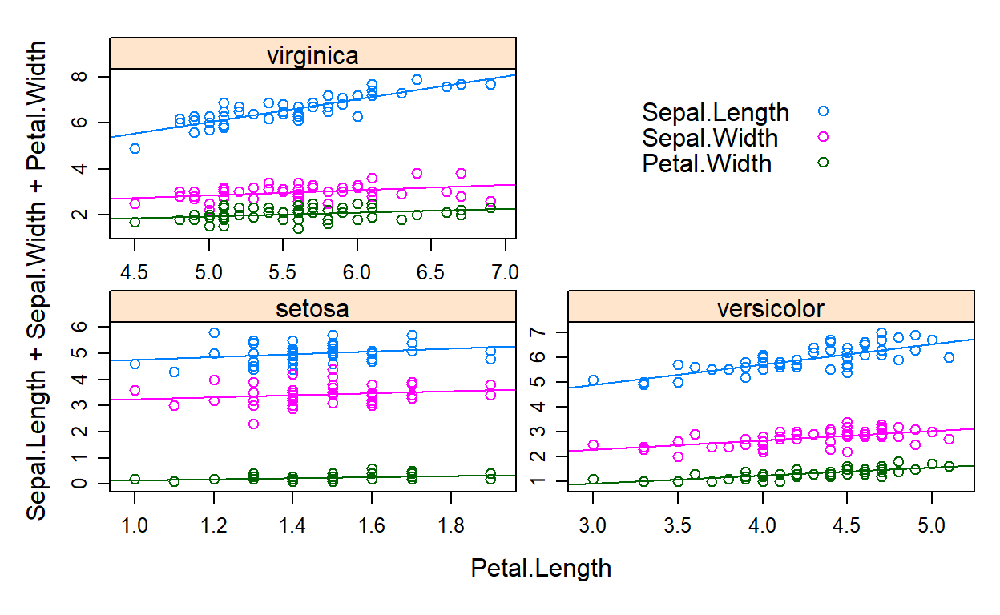
Customization
As the par function mentioned earlier, Various elements of a trellis plot can be customized by passing the graphic parameters to the trellis.par.set function. To get the list of graphic parameters and their values call:
It gives you an idea about how many parameters can be customized. Those defaults can be store in an object to further restore them. Many tutorials are available online on the lattice package in order to customize your plots as you need. However, the lattice package is not always easy to use, and inspire the main author of another package ggplot that now becomes the “reference” in matter of graphics in R.
Package ggplot
Tutorial from Manny Gimond (2020)
Basic grammar
The ggplot2 package is designed around the idea that statistical graphics can be decomposed into a formal system of grammatical rules. The ggplot2 learning curve is steep but once you mastered you will have a great control over graphical design. For an up-to-date list of ggplot2 functions, you may want to refer to ggplot2’s website.
A plot in ggplot2 consists of different primary layering components, with the three primary components being:
- The dataset that houses the data to be plotted;
- The aesthetics which describe how data are to be mapped to the geometric elements (color, shape, size, etc..);
- The geometric elements to use in the plot (i.e. points, lines, rectangles, etc…).
Additional (optional) layering components include:
- Statistical elements such as smoothing, binning or transforming the variable
- Facets for conditional or trellis plots
- Coordinate systems for defining the plots shape (i.e. Cartesian, polar, spatial map projections, etc…)
To access ggplot2 functions, you will need to load its library:
Today, we will use the following data sets (examine objects created) :
dat1: [grain harvest for North-America] (http://www.fao.org/faostat/en/#data/QC) + several long and wide versions of this dataset. Examine objects created.
library(tidyr)
library(dplyr)
dat1 <- read.csv("Data/FAO_grains_NA.csv", header=TRUE)
dat1w <- dat1 %>% filter(Information == "Yield (Hg/Ha)", Country =="United States of America", Crop %in% c("Oats", "Maize", "Barley", "Buckwheat","Rye")) %>% select (Year, Crop, Value) %>% spread(key = Crop,value="Value")
dat1l <- dat1w %>% pivot_longer(2:6, names_to = "Crop", values_to = "Yield")
dat1l2 <- dat1 %>% filter(Information == "Yield (Hg/Ha)", Crop %in% c("Oats", "Maize", "Barley", "Buckwheat","Rye")) %>% select( Year, Crop, Country, Yield = Value) # Note that we are renaming the Value field
dat2: [income/education census data] (https://www.socialexplorer.com/data/ACS2016/metadata/?ds=ACS16&table=B20004) for the US and its long version (only for advance use later).
library(stringr)
dat2 <- read.csv("Data/Income_education.csv", header=TRUE)
Edu.Gend <- data.frame(
variable = paste("B200040", str_pad(1:18, width=2 , pad="0"),sep="" ),
Level = rep(c("All", "NoHS","HS","AD","BD","Grad"), times=3),
Gender = rep(c("All", "M","F"), each=6))
# Create a region/state join table
st.reg <- data.frame(State = tolower(state.abb), Region = state.region)
st.reg <- rbind(st.reg , data.frame(State="dc", Region="South"))
# Start the piping operations
dat2b <- dat2 %>%
gather(key = "variable", value = "value", -1:-2) %>%
left_join(Edu.Gend, by="variable" ) %>%
select(State, County, Level, Gender, value) %>%
mutate(Level = factor(Level, levels = c("All","NoHS","HS", "AD", "BD", "Grad"))) %>%
left_join(st.reg , by="State")
dat2c <- spread(dat2b, key = Gender, value = value )
From a ggplot grammatical perspective, a scientific graph is the conversion of data to aesthetic attributes and geometric objects. This is an important concept to grasp since it underlies the construction of all graphics in ggplot2.
For example, if we want to generate a point plot of crop yield as a function of year using the dat1l data frame, we type:
ggplot(dat1l , aes(x = Year, y = Yield)) + geom_point()
where the function, ggplot will pass the data frame name whose content will be mapped; the aes function is given data-to-geometry mapping instructions (Year is mapped to the x-axis and Yield is mapped to the y-axis); and geom_point is the geometry type.

If we wanted to include a third variable, crop type, to the map, we would need to map its aesthetics: here we’ll map Crop to the color element of the geom.
ggplot(dat1l , aes(x = Year, y = Yield, color = Crop)) + geom_point()
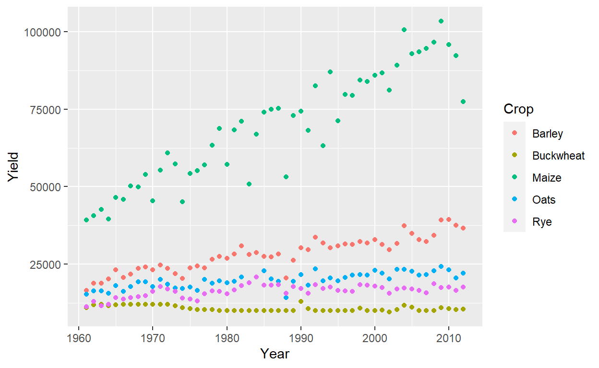
The parameter color acts as a grouping parameter whereby the groups are assigned unique colors.

If we want to plot lines instead of points, simply substitute the geometry type with the geom_line geometry.
Note that the aesthetics are still mapped in the same way with Year mapped to the x coordinate, Yield mapped to the y coordinate and Crop mapped to the geom’s color.
Note that the parameters x= and y= can be omitted from the syntax reducing the line of code to:
Geometries
Examples of a few available geometric elements follow.
geom_line
geom_line generates line geometries. We’ll use data from dat1w to generate a simple plot of oat yield as a function of year.

Parameters such as color and linetype can be passed directly to the geom_line function:
Note the difference in how color= is implemented here. It’s no longer mapping a variable’s levels to a range of colors as when it’s called inside of the aes function, instead, it’s setting the line color to blue.
geom_point
This generates point geometries. This is often used in generating scatterplots. For example, using dat dataste to plot female income (variable B20004013) vs male income (variable B20004007):
ggplot(dat2, aes(x = B20004013, y = B20004007)) + geom_point(alpha = 0.3)
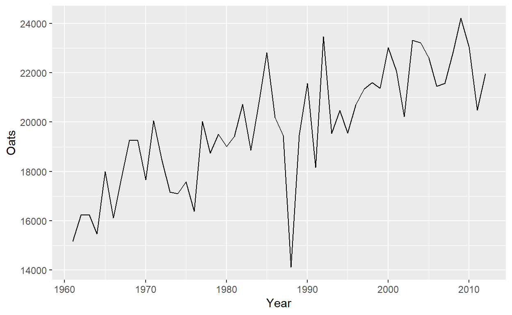
As did earlier, we modify the point’s transparency by passing the alpha=0.3 parameter to the geom_point function. Other parameters that can be passed to point geoms include colour, pch and cex.
ggplot(dat2, aes(x = B20004013, y = B20004007)) +
geom_point(colour = "red", pch=3 , alpha = 0.3, cex=0.6)
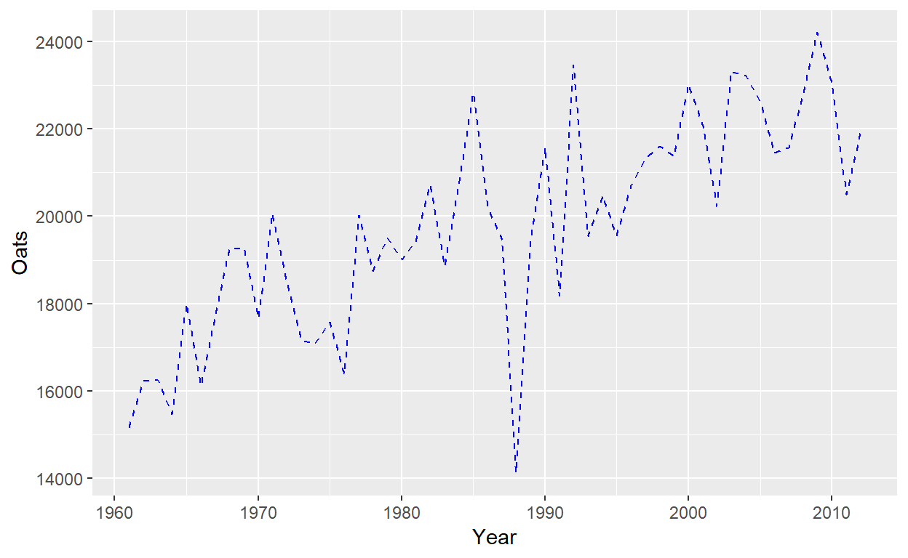
geom_hex
When a bivariate scatter plot has too many overlapping points, it may be helpful to bin the observations into regular hexagons. This provides the number of observations per bin.
The binwidth argument defines the width and height of each bin in the variables’ axes units.
geom_boxplot
In the following example, a boxplot of Yield is generated for each Crop type.
ggplot(dat1l, aes(x = Crop, y = Yield)) + geom_boxplot(fill = "bisque")
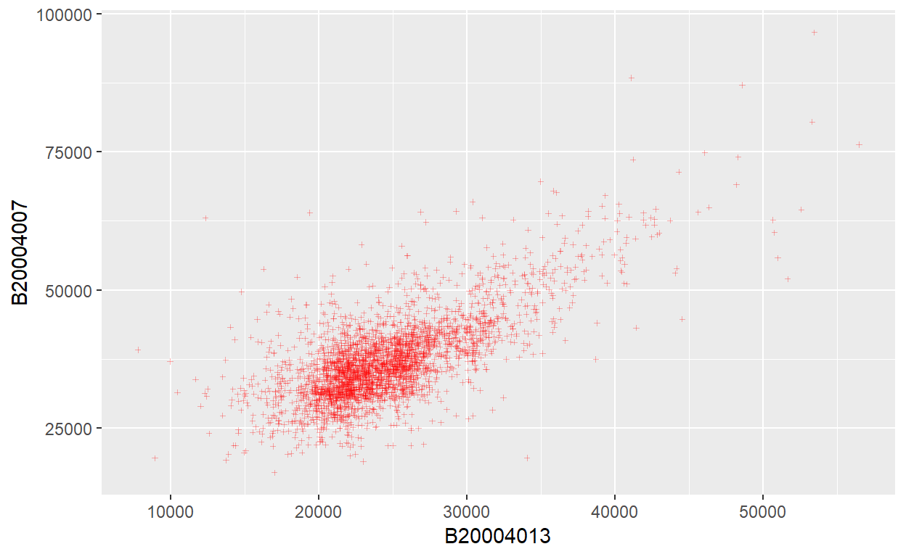
If we want to generate a single boxplot (for example for all yields irrespective of crop type) we need to pass a dummy variable to x=:
ggplot(dat1l, aes(x = "", y = Yield)) +
geom_boxplot(fill = "bisque") + xlab("All crops")
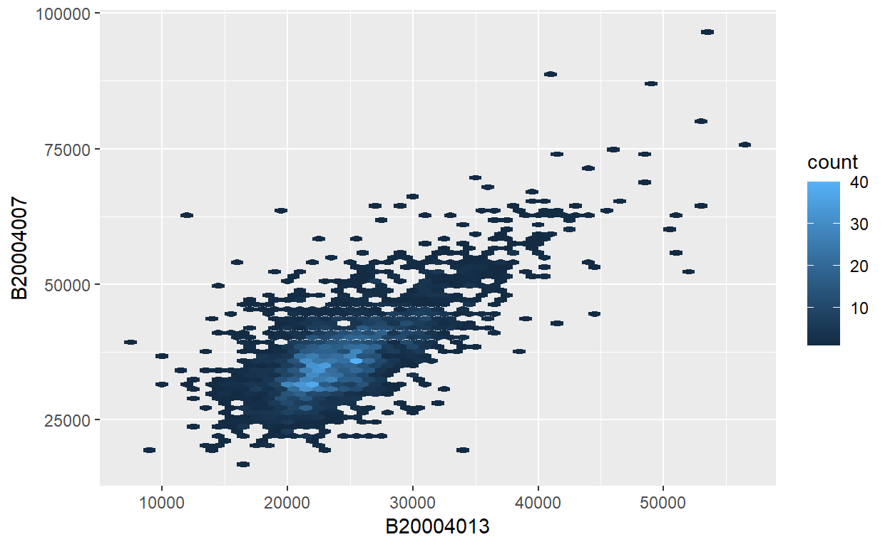
geom_violin
A violin plot is a symmetrical version of a density plot which provides even greater detail of a sample’s distribution than a boxplot.
ggplot(dat1l, aes(x = "", y = Yield)) + geom_violin(fill = "bisque")
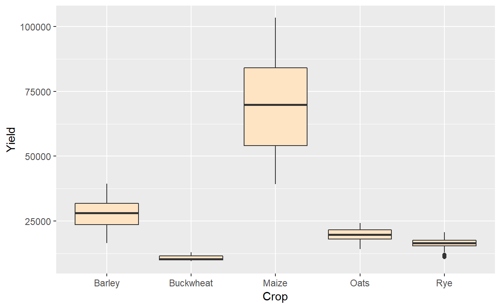
geom_histogram
Histograms can be plotted for single variables only (unless faceting is used) as can be noted by the absence of a y= parameter in aes:
ggplot(dat1w, aes(x = Oats)) + geom_histogram(fill = "grey50")
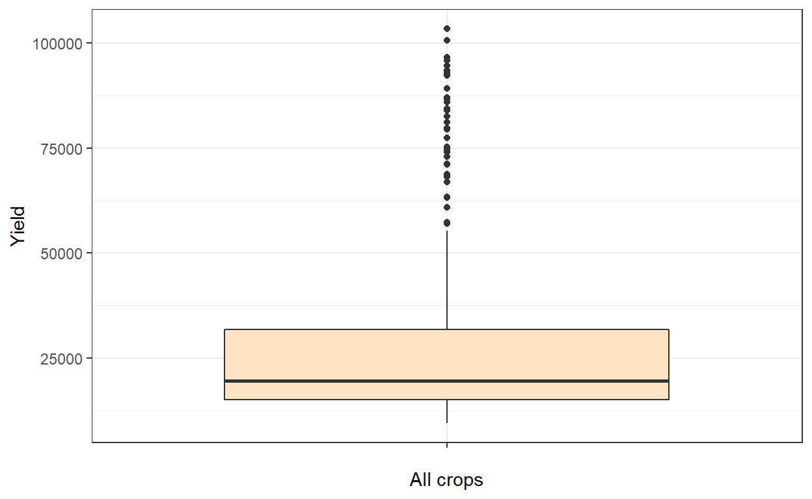
The bin widths can be specified in terms of the value’s units. In our example, the unit is yield of oats (in hg/Ha). So if we want to generate bin widths that cover 1000 hg/Ha (= 100 kg / Ha), we can type:
ggplot(dat1w, aes(x = Oats)) +
geom_histogram(fill = "grey50", binwidth = 1000)

If you want to control the number of bins, use the parameter bins= instead. For example, to set the number of bins to 8, modify the above code chunk as follows:
ggplot(dat1w, aes(x = Oats)) +
geom_histogram(fill = "grey50", bins = 8)
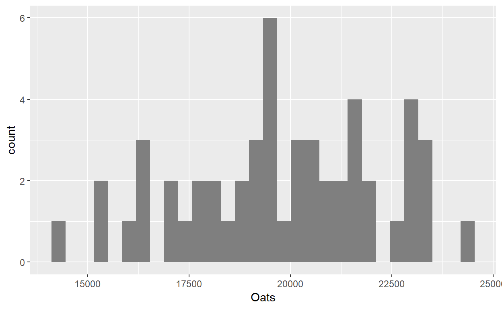
geom_bar
Bar plots are used to summaries the counts of a categorical value. For example, to plot the number of counties in each state (note that each record in dat2 is assigned a county):
To sort the bars by length we need to rearrange the State factor level order based on the number of counties in each state (which is the number of times a state appears in the data frame). We’ll make use of forcats’s fct_infreq function to reorder the State factor levels based on frequency.
If we want to reverse the order (i.e. plot from smallest number of counties to greatest), wrap the fct_infreq function with fct_rev.
ggplot(dat2, aes(fct_rev(fct_infreq(State,ordered = TRUE)))) + geom_bar()
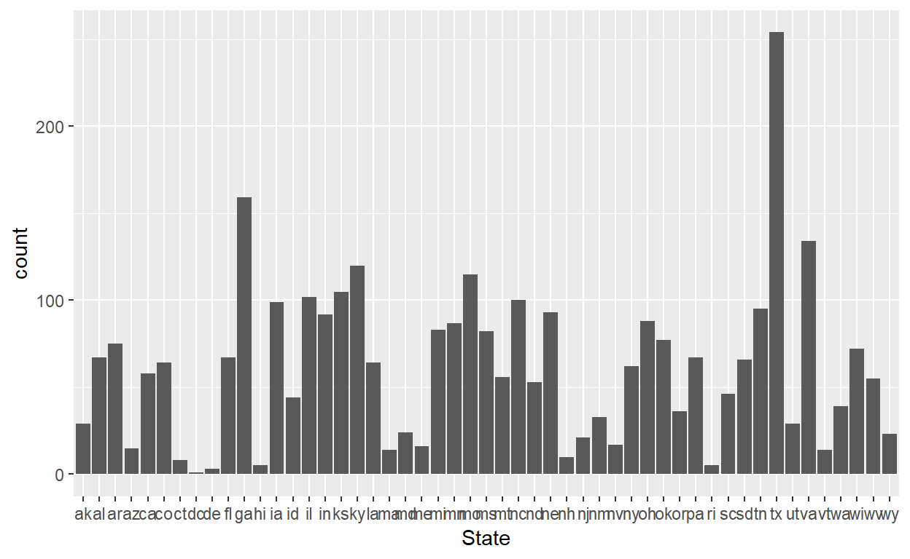
The geom_bar function can also be used with count values (i.e. variable already summarized by count). First, we’ll summaries the number of counties by state using the dplyr package. This will generate a data frame with just 51 records: one for each of the 50 states and the District of Columbia.
# A tibble: 6 x 2
State Counties
<chr> <int>
1 ak 29
2 al 67
3 ar 75
4 az 15
5 ca 58
6 co 64When using summarized data, we must pass the parameter stat="identity" to the geom_bar function. We must also explicitly map the x and y axes geometries. Note that since we are now generating bar heights from a value field and not a frequency, we will need to use another forcats ordering function called fct_reorder. This function takes three parameters: the variable to be ordered (State), the variable whose values will determine the order (Counties) and the function, fun=, which defines the statistic used to summaries the sorting variable. Since there is just one value per state, we can use any summary statistic such as median, mean, sum, min or max.
ggplot(dat2.ct, aes(x=fct_reorder(State, Counties, .fun = median), y = Counties)) + geom_bar(stat = "identity")
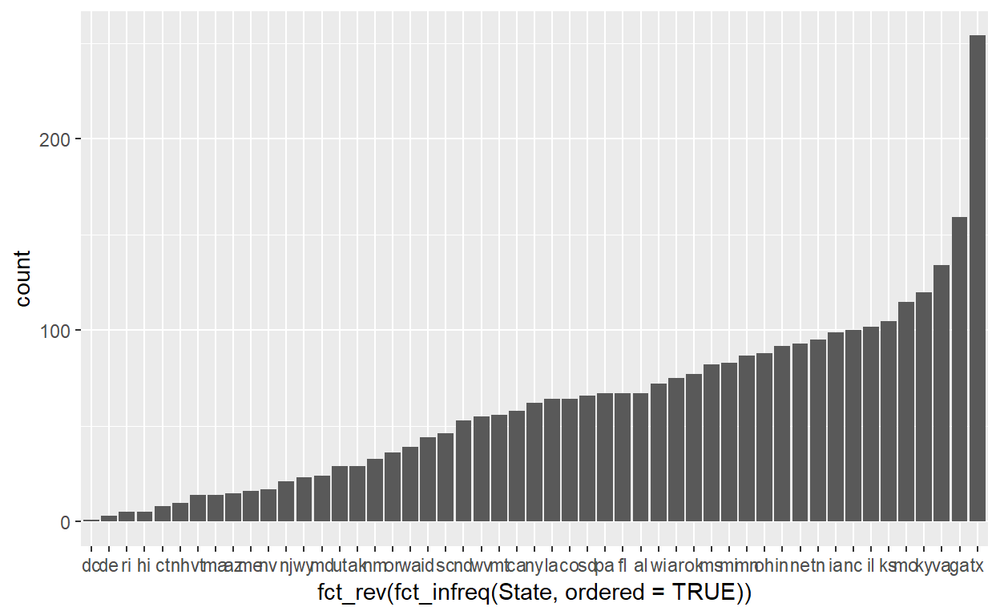
Note that you can replace fct_reorder from the forcats packages with the base function reorder mentioned ealier in the class.
dot plot
The dot plot is an alternative way to visualize counts as a function of a categorical variable. Instead of mapping State to the x-axis, we’ll map it to the y-axis.
ggplot(dat2.ct , aes(x = Counties, y = State)) + geom_point()

Dot plot graphics benefit from sorting–more so then bar plots. Here, we’ll make use of forcats::fct_reorder function (note on this notation: it is to call a function from a specific package, such as it can avoid conflicts).
ggplot(dat2.ct , aes(x = Counties, y = fct_reorder(State, Counties, .fun = median))) + geom_point()
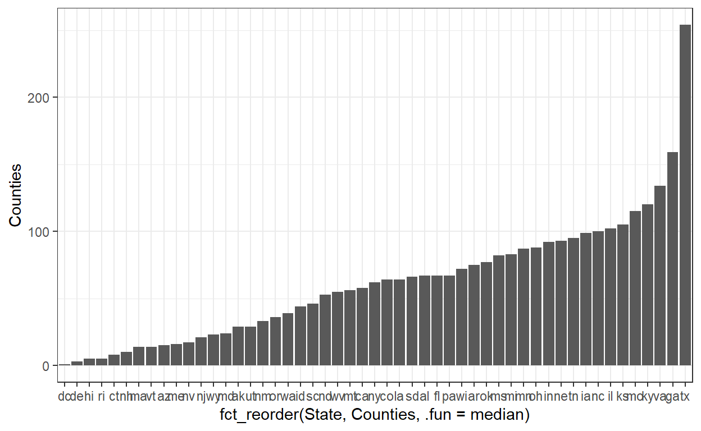
Combining geometries
Obviously, geometries can be layered. For example, to overlay a linear regression line to the data we can add a geom_smooth layer:
ggplot(dat2, aes(x = B20004013, y = B20004007)) +
geom_point(alpha = 0.3, color='#4f4b4b') +
geom_smooth(method = "lm", color='green')
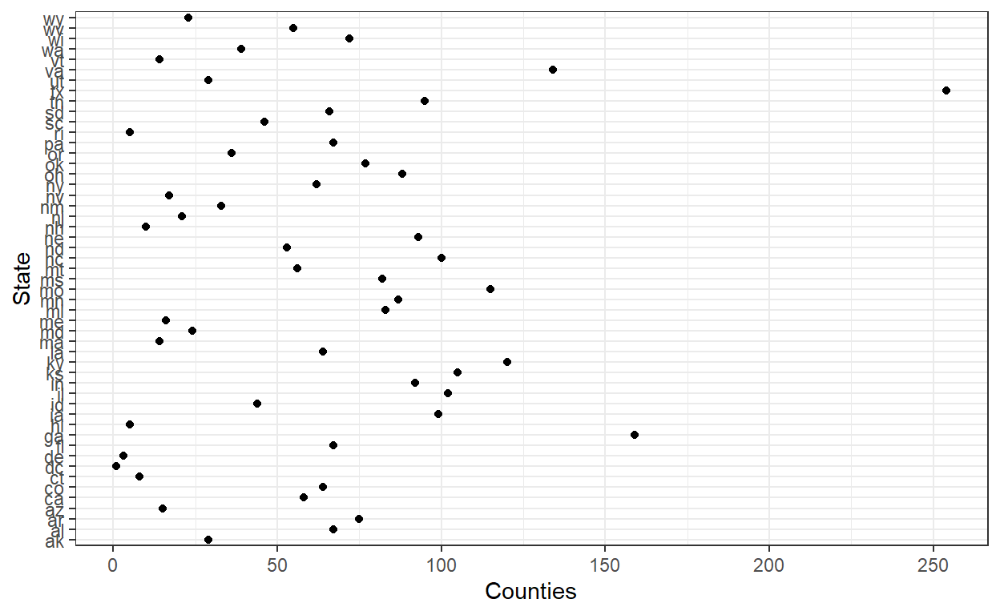
The geom_smooth can be used to fit other lines such as a loess line:
ggplot(dat2, aes(x = B20004013, y = B20004007)) +
geom_point(alpha = 0.3, color='#4f4b4b') +
geom_smooth(method = "loess", color='green')
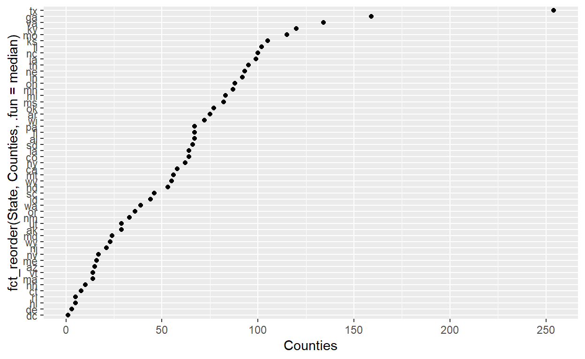
The confidence interval can be removed from the smooth geometry by specifying se = FALSE.
Tweaking a ggplot2 graph
Little trick for data visualization with ggplot2 summarized here. You will have to spend quite a lot of time to get all the functionality off the ggplot2. Happily, many documentations are available online . Check the R gallery.
Plot title
You can add a plot title using the ggtile function.
Axes titles
Axes titles can be explicitly defined using the xlab and ylab functions.
ggplot(dat2, aes(x = B20004013, y = B20004007)) + geom_point(alpha = 0.3) + xlab("Female income ($)") + ylab("Male income ($)")

To remove axis labels, simply pass NULL to the functions as in xlab(NULL) and ylab(NULL)
Axes labels
You can customize an axis’ label elements. If you are mapping continuous values along the x and y axes, use the scale_x_continuous and scale_y_continuous functions. For example, to specify where to place the tics and the accompanying labels, type:
ggplot(dat2, aes(x = B20004013, y = B20004007))+
geom_point(alpha = 0.3) +
xlab("Female income ($)") +
ylab("Male income ($)") +
scale_x_continuous(breaks = c(10000, 30000, 50000),labels = c("$10,000", "$30,000", "$50,000"))
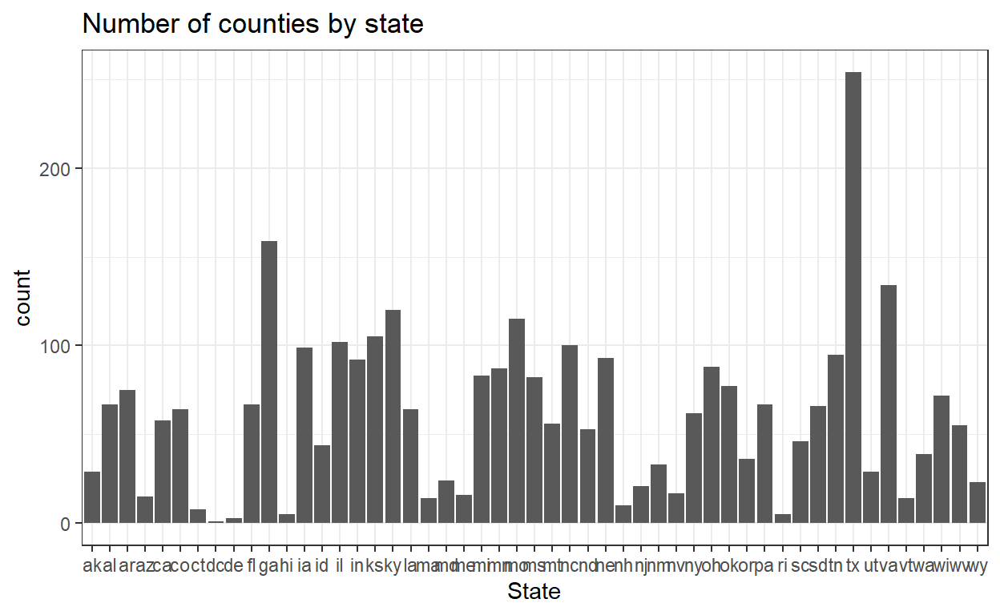
You change the label formats whereby the numbers are truncated to a thousandth of their original value, you can make use of unit_format from the scales package:
ggplot(dat2, aes(x=B20004013, y=B20004007)) + geom_point(alpha=0.3) +
xlab("Female income ($)") + ylab("Male income ($)") +
scale_x_continuous(labels=scales::unit_format(suffix="k",scale=0.001, sep="")) +
scale_y_continuous(labels=scales::unit_format(suffix="k", scale=0.001, sep=""))
You can rotate axes labels using the theme function.
ggplot(dat2, aes(x=B20004013, y=B20004007)) + geom_point(alpha=0.3) +
xlab("Female income ($)") + ylab("Male income ($)") +
scale_x_continuous(labels=scales::unit_format(suffix="k", scale=0.001, sep="")) +
scale_y_continuous(labels=scales::unit_format(suffix="k", scale=0.001, sep="")) +
theme(axis.text.x = element_text(angle = 45, hjust = 1))
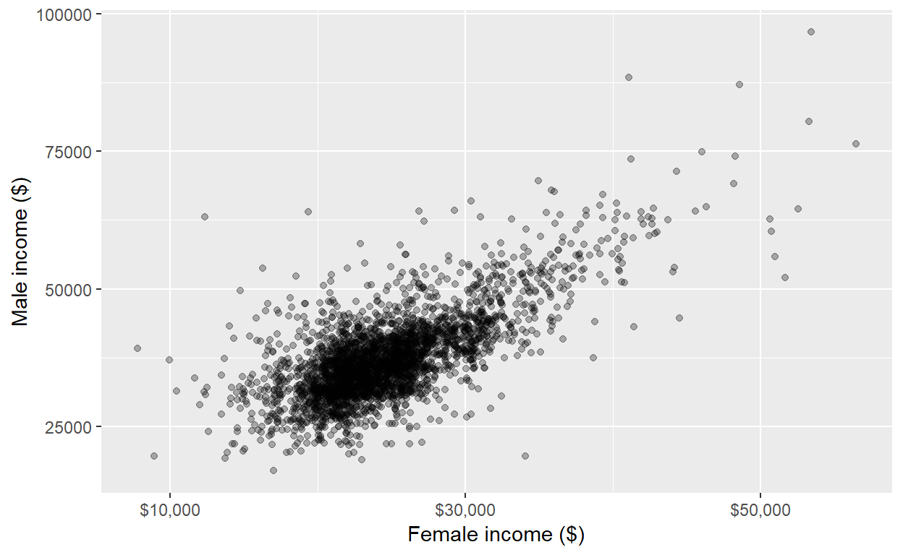
The hjust argument justifies the values horizontally. Its value ranges from 0 to 1 where 0 is completely left-justified and 1 is completely right-justified. Note that the justification is relative to the text’s orientation and not to the axis. So it may be best to first rotate the label values, then to adjust justification based on the plot’s look as needed.
If you want the label values rotated 90° you might also need to justify vertically (relative to the text’s orientation) using the vjust argument where 0 is completely top-justified and 1 is completely bottom-justified.
Axes limits
The axis range can be set using xlim and ylim.
ggplot(dat2, aes(x = B20004013, y = B20004007)) + geom_point(alpha = 0.3) +
xlab("Female income ($)") + ylab("Male income ($)") +
xlim(10000, 75000) + ylim(10000, 75000)
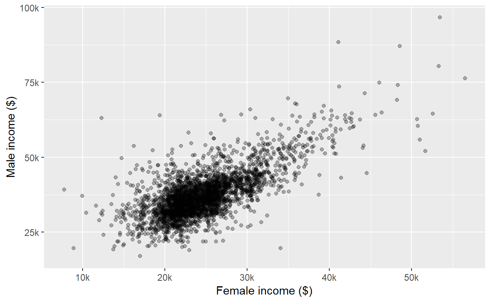
However, if you are calling the scale_x_continuous and scale_y_continuous functions, you do not want to use xlim and ylim. Instead, you should set the limit= argument to the aforementioned functions. For example:
ggplot(dat2, aes(x = B20004013, y = B20004007)) + geom_point(alpha = 0.3) +
xlab("Female income ($)") + ylab("Male income ($)") +
scale_x_continuous(limit = c(10000, 75000),labels = scales::comma_format()) +
scale_y_continuous(limit = c(10000, 75000), labels = scales::comma_format())
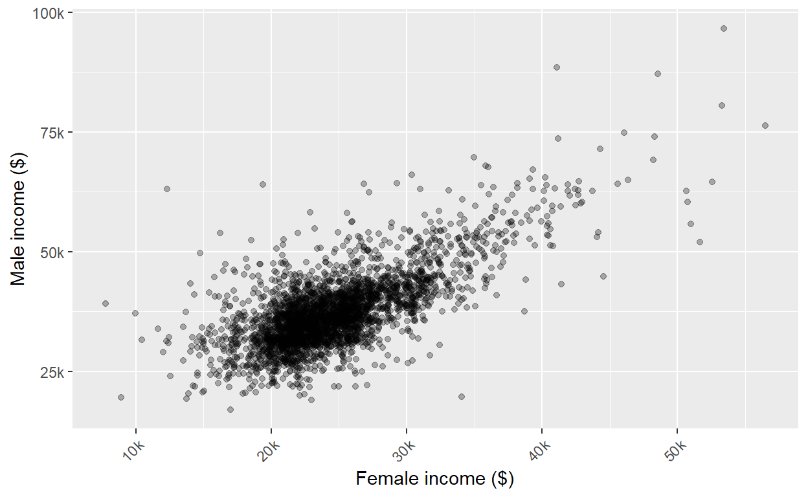
Note the use of the function comma_format from the scale that will add commas to large numbers
Axes breaks
You can explicitly define the breaks with the breaks argument. Continuing with the last example, we get:
ggplot(dat2, aes(x = B20004013, y = B20004007)) + geom_point(alpha = 0.3) +
xlab("Female income ($)") + ylab("Male income ($)") +
scale_x_continuous(limit = c(10000, 75000),labels = scales::comma_format(),breaks = c(10000, 30000, 50000, 70000)) +
scale_y_continuous(limit = c(10000, 75000),labels = scales::comma_format(),breaks = c(10000, 30000, 50000, 70000))
Note that the breaks argument can be used in conjunction with other arguments (as shown in this example), or by itself.
Axes and data transformations
If you wish to apply a non-linear transformation to either axes (while preserving the untransformed axis values) add the coord_trans function as follows:
ggplot(dat2, aes(x = B20004013, y = B20004007)) + geom_point(alpha = 0.3) +
xlab("Female income ($)") + ylab("Male income ($)") +
coord_trans(x = "log")
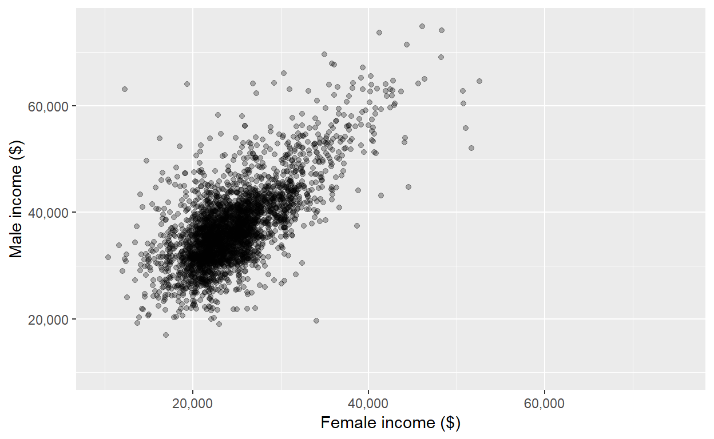
You can also transform the y-axis by specifying the parameter y=. The log transformation defaults to the natural log. For a log base 10, use”log10” instead. For a square root transformation, use “sqrt”. For the inverse use “reciprocal”.
Advanced transformations can be called via the scales package. For example, to implement the box-cox transformation (with a power of -0.3), type:
ggplot(dat2, aes(x = B20004013, y = B20004007)) + geom_point(alpha = 0.3) +
xlab("Female income ($)") + ylab("Male income ($)") +
coord_trans(x = scales::boxcox_trans(-0.3))
Note that any statistical geom (such as the regression line) will be applied to the un-transformed data. So a linear model may end up looking non-linear after an axis transformation. If a linear fit is to be applied to the transformed data, a better alternative is to transform the values instead of the axes. The transformation can be done on the original data or it can be implemented in ggplot using the scale_x_continuous and scale_y_continuous functions such as:
ggplot(dat2, aes(x = B20004013, y = B20004007)) + geom_point(alpha = 0.3) +
geom_smooth(method = "lm", se = FALSE) +
xlab("Female income ($)") + ylab("Male income ($)") +
scale_x_continuous(trans = "log", breaks = seq(10000,60000,10000))
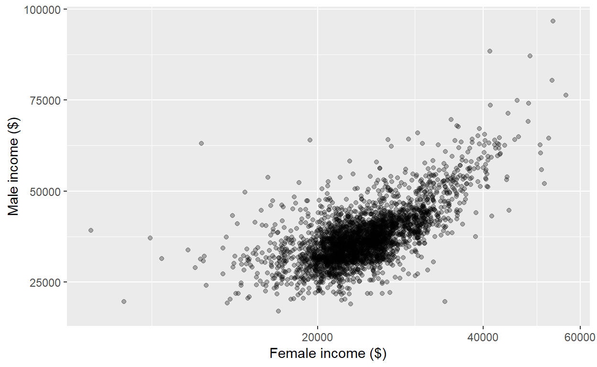
The scale_x_continuous and scale_y_continuous functions will accept scales transformation parameters–e.g. scale_x_continuous(trans = scales::boxcox_trans(-0.3)). Note that the parameter breaks is not required but is used here to highlight the transformed nature of the axis.
Aspect ratio
You can impose an aspect ratio to your plot using the coord_equal function. For example, to set the axes units equal (in length) to one another set ratio=1:
ggplot(dat2, aes(x = B20004013, y = B20004007)) + geom_point(alpha = 0.3) +
geom_smooth(method = "lm") +
xlab("Female income ($)") + ylab("Male income ($)") +
coord_equal(ratio = 1)
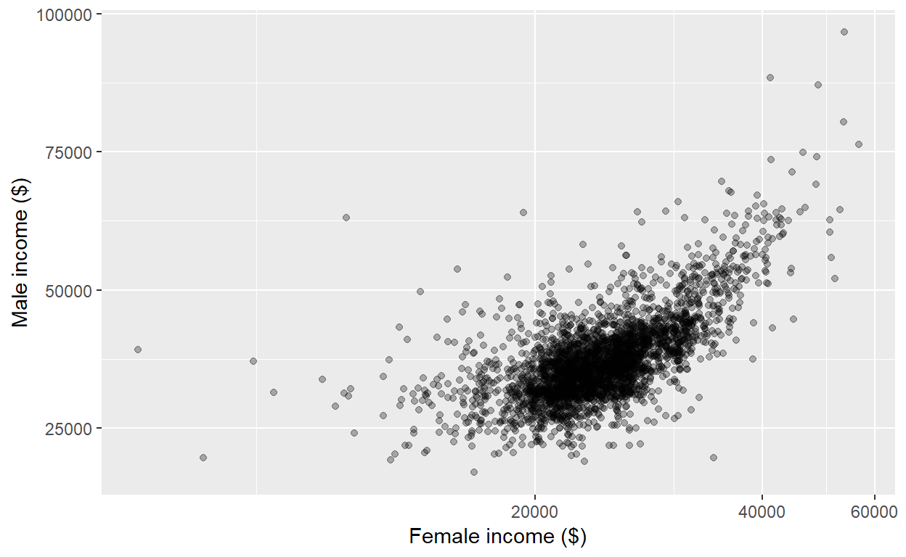
Colors
You can customize geom colors using one of two sets of color schemes: one for continuous values, the other for categorical (discrete) values.
| Continous | Categorical |
|---|---|
| scale_colour_gradient | scale_colour_hue |
| scale_colour_gradient2 | scale_colour_grey |
| scale_color_distiller | scale_colour_manual |
| scale_fill_gradient2 | scale_colour_brewer |
| scale_fill_gradient | |
| scale_fill_distiller |
Continuous color schemes
The following chunk of code summarizes dat2 by tallying the number of counties in each state and by computing the median county income values.
The following chunk applies a green to red color gradient fill to each bar based on the median county incomes. Note that we are using the summarized count table (and not the original dat2 table). Recall that when plotting bars from counts that are already tabulated we must specify stat="identity" in the geom_bar function.
ggplot(dat2.ct2, aes(x = fct_reorder(State, Counties), y = Counties, fill = Income)) +
geom_bar(stat = "identity") +
scale_fill_gradient(low = "green", high = "red")
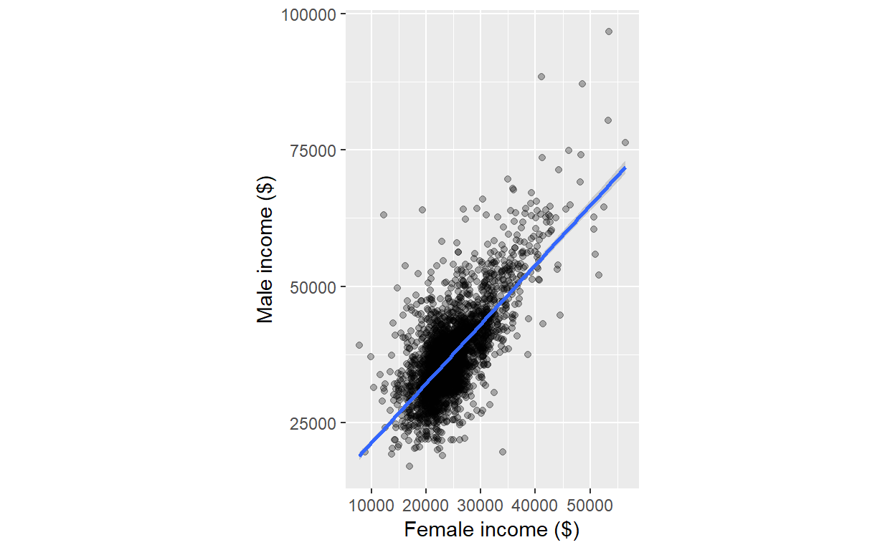
The following chunk applies a divergent color scheme while allowing one to specify the central value of this scheme. Note that the colors are symmetrical about the midpoint which may result in only a partial range of the full possible gradient of colors.
ggplot(dat2.ct2, aes(x = fct_reorder(State, Counties), y = Counties, fill = Income)) +
geom_bar(stat = "identity") +
scale_fill_gradient2(low = "darkred", mid = "white", high = "darkgreen", midpoint = 30892)

In the last two chunk, we filled the bars with colors (note the use of functions with the string _fill_). When assigning color to point or line symbols, use the function with the _colour_ string. For example:
ggplot(dat2.ct2, aes(y = fct_reorder(State, Counties), x = Counties, col = Income)) +
geom_point() +
scale_colour_gradient2(low = "darkred", mid = "white", high = "darkgreen", midpoint = 30892)
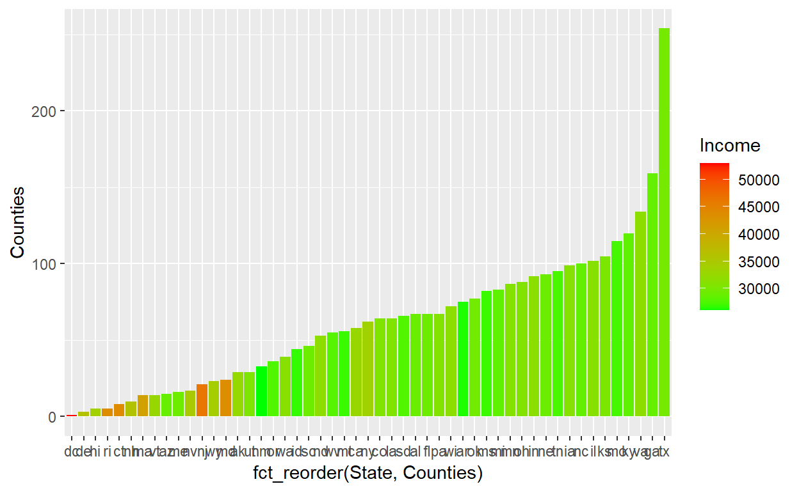
Discrete color schemes
In the following chunk, we assign colors manually to each level in the variable Yield. The order of the color names mirror the order of the variable levels.
ggplot(dat1l, aes(Year, Yield, col = Crop)) +
geom_line() +
scale_colour_manual(values = c("red", "orange", "green", "blue", "yellow"))
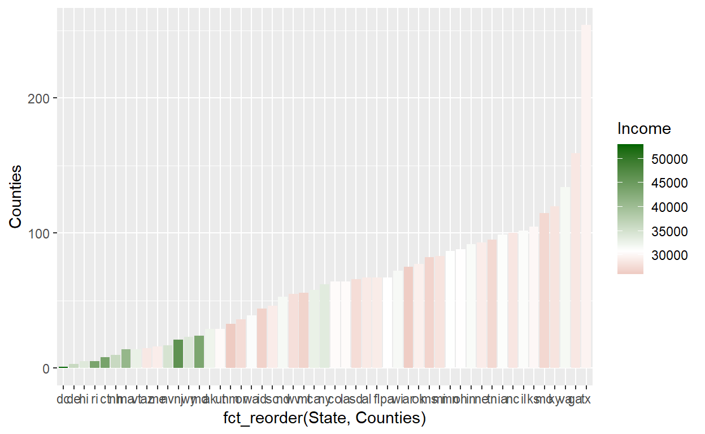
The following chunk applies a predefined discrete color scheme using one of Brewer’s preset qualitative colors, palette Dark2, to each level.
ggplot(dat1l, aes(Year, Yield, col = Crop)) +
geom_line() +
scale_colour_brewer(palette = "Dark2")
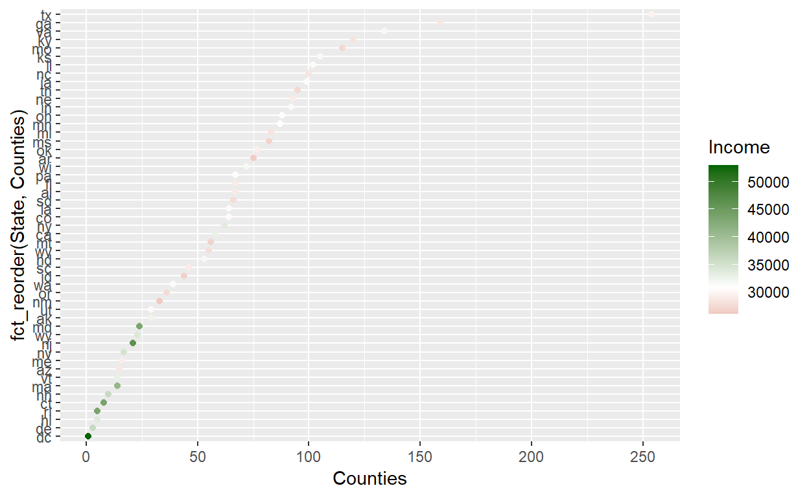
You can also apply sequential or divergent “Brewer” color schemes to variables having an implied order.
Let’s assume that there is an implied order to the crop types. For example, we’ll reorder the crop types based on their median yield (this creates an ordered factor from the Crop variable). We can then use one of Brewer’s sequential color schemes such as Reds.
ggplot(dat1l, aes(Year, Yield, col = reorder(Crop, Yield, median))) +
geom_line() +
guides(colour = guide_legend(title = "Crops")) +
scale_colour_brewer(palette = "Reds")
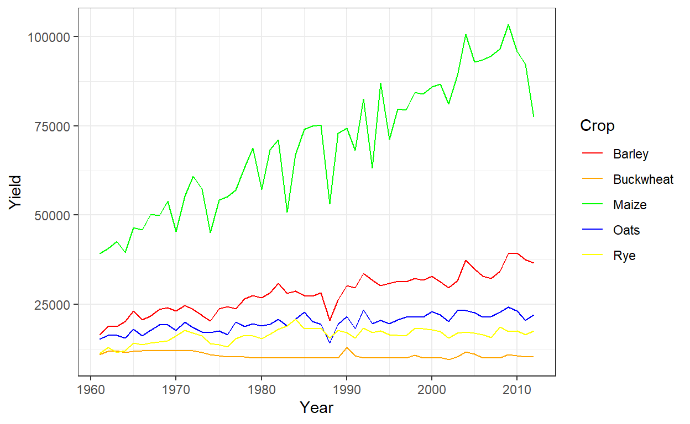
Note that we’ve added a guides function to rename the legend title. This is not needed to generate the sequential colors.
To reverse the color scheme, set the direction argument to -1 in the function scale_colour_brewer
You can view a list of predifined Brewer color schemes using RColorBrewer::display.brewer.all().
Adding mathematical symbols to a plot
You can embed math symbols using plotmath’s mathematical expressions by wrapping these expressions in an expression function. For example:
ggplot(dat2, aes(x = B20004013^0.333, y = sqrt(B20004007))) + geom_point(alpha = 0.3) +
xlab( expression(("Female income") ^ frac(1,3))) +
ylab( expression(sqrt("Male income")))
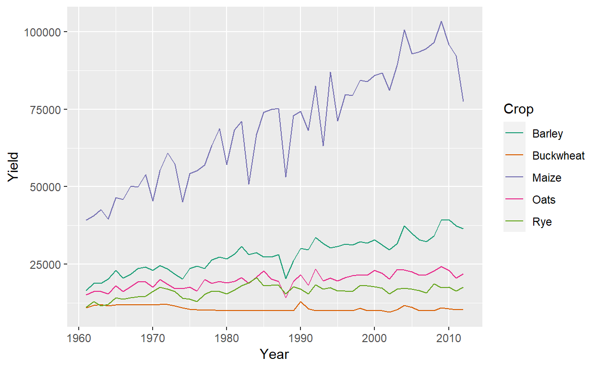
To view the full list of mathematical expressions, call for help ?plotmath.
Faceting
The functionality of the lattice package are also available in ggplot2. It is called faceting
Faceting by categorical variables
facet_wrap
Faceting (or conditioning on a variable) can be implemented in ggplot2 using the facet_wrap function.
ggplot(dat1l2, aes(x = Year, y = Yield, color = Crop)) + geom_line() +
facet_wrap( ~ Country, nrow = 1)
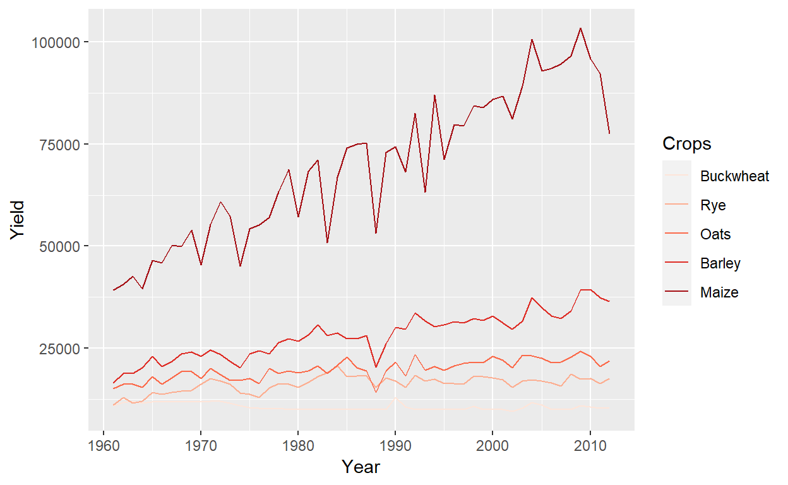
The parameter ~ Country tells ggplot to condition the plots on country. If we wanted the plots to be stacked, we would set nrow to 2.
We can also condition the plots on two variables such as Crop and Country. In essence, this stacks the categories (Note that we will also rotate the x-axis labels to prevent overlaps).
ggplot(dat1l2, aes(x = Year, y=Yield)) + geom_line() +
theme(axis.text.x = element_text(angle = 90, vjust = 0.5, hjust = 1)) +
facet_wrap(Crop ~ Country, nrow = 1)
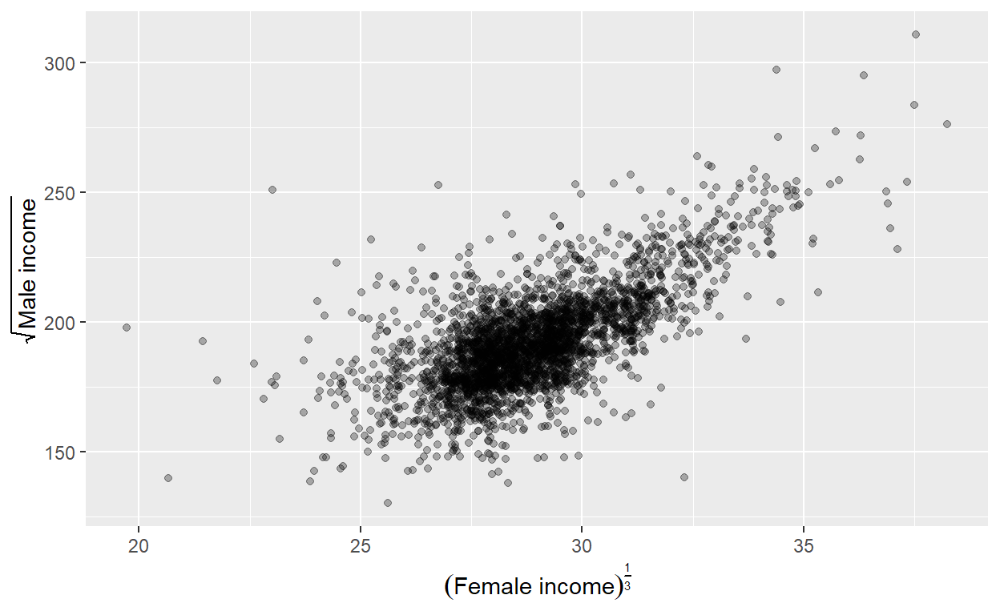
You can wrap the facet headers using the label_wrap_gen function as an argument value to labeler. For example, to wrap the United States of America value, we’ll specify the maximum number of characters per line using the width argument:
ggplot(dat1l2, aes(x = Year, y=Yield)) + geom_line() +
theme(axis.text.x = element_text(angle = 90, vjust = 0.5, hjust = 1)) +
facet_wrap(Crop ~ Country, nrow = 1, labeller = label_wrap_gen(width = 12))
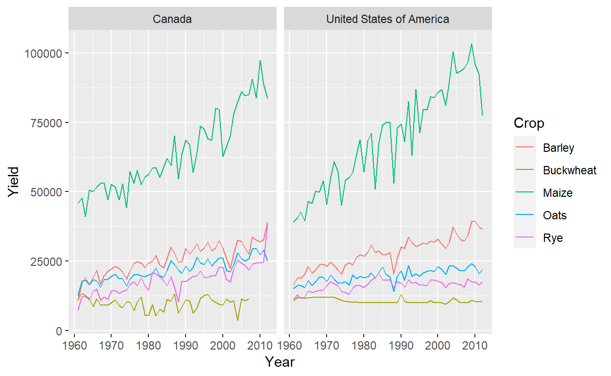
facet_grid
The above facet_wrap example generated unique combinations of the variables Crop and Country. But such plots are usually best represented in a grid structure where one variable is spread along one axis and the other variable is spread along another axis of the plot layout. This can be accomplished using the facet_grid function:
ggplot(dat1l2, aes(x = Year, y = Yield)) + geom_line() +
facet_grid( Crop ~ Country)
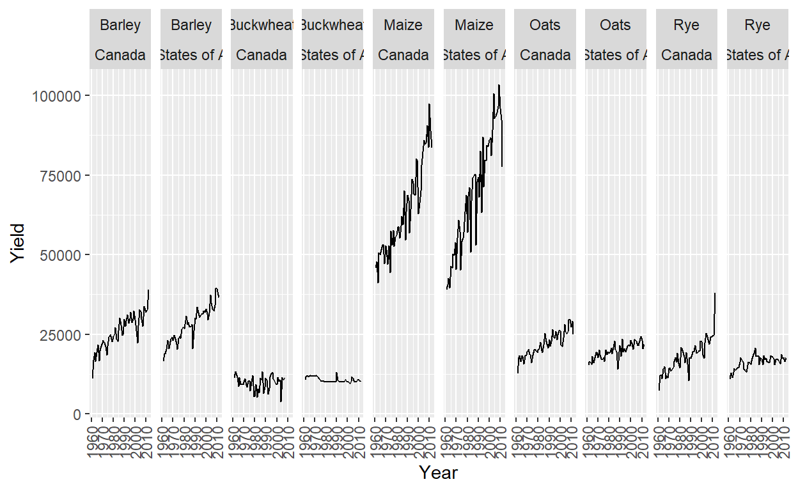
Faceting by continous variables (advance)
In the above examples, we are faceting the plots based on a categorical variable: Country and/or crop. But what if we want to facet the plots based on a continuous variable? For example, we might be interested in comparing male and female incomes across different female income ranges. This requires that a new categorical field (a factor) be created assigning to each case (row) an income group. We can use the cut function to accomplish this task (we’ll also omit all values greater than 100,000):
In this chunk of code, we create a new variable, incrng, which is assigned an income category group depending on which range dat2c$F (female income) falls into. The income interval breaks are defined in breaks=. In the output, you will note that the factor incrng defines a range of incomes (e.g. (0 , 2.5e+04]) where the parenthesis ( indicates that the left-most value is exclusive and the bracket ] indicates that the right-most value is inclusive.
However, because we did not create categories that covered all income values in dat2c$F we ended up with a few NA’s in the incrng column:
summary(dat2c$incrng)
(0,2.5e+04] (2.5e+04,5e+04] (5e+04,7.5e+04] (7.5e+04,1e+05]
9670 7633 1446 34
NA's
75 We will remove all rows associated with missing incrng values:
dat2c <- na.omit(dat2c)
We can list all unique levels in our newly created factor using the levels() function.
levels(dat2c$incrng)
[1] "(0,2.5e+04]" "(2.5e+04,5e+04]" "(5e+04,7.5e+04]"
[4] "(7.5e+04,1e+05]"The intervals are not meaningful displayed as is (particularly when scientific notation is adopted). So we will assign more meaningful names to our factor levels as follows:
State County Level Region All F M
1 ak Aleutians East Borough All West 21953 20164 22940
2 ak Aleutians East Borough NoHS West 21953 19250 22885
3 ak Aleutians East Borough HS West 20770 19671 21192
4 ak Aleutians East Borough AD West 26383 26750 26352
5 ak Aleutians East Borough BD West 22431 19592 27875
6 ak Aleutians East Borough Grad West 74000 74000 71250
incrng
1 Under 25k
2 Under 25k
3 Under 25k
4 25k-50k
5 Under 25k
6 50k-75kNote that the order in which the names are passed must match that of the original breaks.
Now we can facet male vs. female scatter plots by income ranges. We will also throw in a best fit line to the plots.
ggplot(dat2c, aes(x = F, y = M)) + geom_point(alpha=0.2, pch=20) +
geom_smooth(method = "lm", col = "red") +
facet_grid( . ~ incrng)

One reason we would want to explore our data across different ranges of value is to assess the consistency in relationship between variables. In our example, this plot helps assess whether the relationship between male and female income is consistent across income groups.
Exporting to an image
you can export a ggplot figure to an image using the ggsave function. For example:
p1 <- ggplot(dat1l2, aes(x = Year, y = Yield, color = Crop)) + geom_line() +
facet_wrap( ~ Country, nrow = 1) +
scale_y_continuous(labels = scales::comma_format())
ggsave("Figures/fig0.png", plot = p1, width = 6, height = 2, units = "in", device = "png")
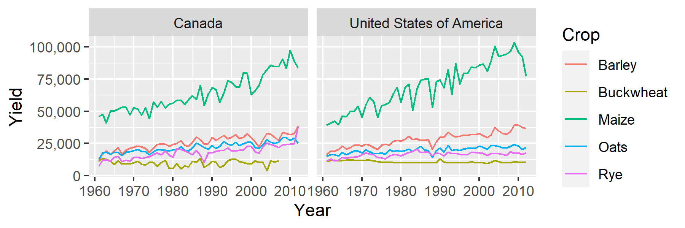
The width and height arguments are defined in units of inches, in. You can also specify these parameters in units of centimeters by setting units = "cm". The device argument controls the image file type. Other file types include "jpeg", "tiff", "bmp" and "svg" just to name a few.
For greater control of the font sizes, you need to make use of the theme function when buiding the plot.
p2 <- ggplot(dat1l2, aes(x = Year, y = Yield, color = Crop)) + geom_line() +
facet_wrap( ~ Country, nrow = 1) +
scale_y_continuous(labels = scales::comma_format()) +
theme(axis.text = element_text(size = 8, family = "mono"),
axis.title = element_text(size = 11, face = "bold"),
strip.text = element_text(size = 11, face="italic", family = "serif"),
legend.title = element_text(size = 10, family = "sans"),
legend.text = element_text(size = 8, color = "grey40"))
ggsave("Figures/fig1.png", plot = p2, width = 6, height = 2, units = "in")
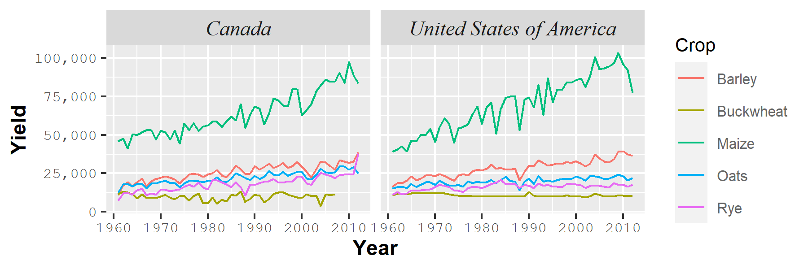
The family argument controls the font type. It does not automatically access all the fonts in your operating system. The three R fonts accessible by default are “serif”, “sans” and “mono”. These are usually mapped to your system’s fonts.
To access other fonts on your operating system, you will need to make use of the showtext package. The package is not covered in this tutorial, instead, refer to the package’s website for instructions on using the package.